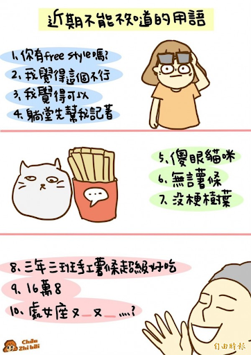

Week 5 構詞
本週主題
- Morphology
語言結構
構詞學 (Morphology) the analysis of internal structure of words
句法 (Syntax) the analysis of the internal structure of sentences/utterances
注意【界面】問題
題型設計上（語言使用上也是），常常放在一起討論。
- 構詞句法 (Morphosyntax) the analysis of the internal structure of utterances, both above the word level and below it.
one tree, two trees, three trees, etc.
同時涉及句法 (名詞於數量詞的次序) 和 構詞 (名詞的單複數變化)。
構詞學
Morphology
- The study of word-making, morphological process and morphological types of world Languages.
- Rules underlying our knowledge of structured of words.
Word
岔開做一個實驗
- Content words (open class) vs function words (closed class).
- Any psychological or neurological evidence? (count the number of F’s in the following text)
有幾個 F 字母？
FINISHED FILES ARE THE RESULT OF YEARS OF SCIENTIFIC STUDY COMBINED WITH THE EXPERIENCE OF YEARS
Morpheme
- The minimal units of Meaning (a linguistic hypothesis)
- one morpheme: boy
- two morphemes: boy-ish
- three morphemes: boy-ish-ness
- four morphemes: gentle-man-li-ness
- five morphemes: un-gentle-man-li-ness
- not to confuse morphemes with syllables
- Mississippi has more than one syllable but is only a single morpheme
- Every word in every language is composed of one or more morphemes (bold hypothesis of discreteness!)
Morphemes: Bound and Free
- can be used alone (i.e., as a word) or not.
- Affix (prefix, suffix, infix, circumfix,…)
- Morphologically complex words consist of a root and one or more affixes.
- A root is a lexical content morphemes that cannot be analyzed into small parts.
- When a root morpheme is combined with an affix, it forms a stem, which may or may not be a word.
English morpheme
Infix
The Inuktitut language of Western Canada, a member of the Eskimo-Aleut language family, has an infix, -pallia-, which must be inserted into a verb root, resulting in a distinct form of the verb.
nungup + pallia + jut = nungupalliajut(“They are gradually disappearing”)ilinniaq + pallia + jugut = ilinniapalliajugut(“We are gradually learning”)
Exercise: Expletive Infixation
The most common infix in America is the word fuckin’ and all the euphemisms for it, such as friggin, freakin, flippin, and fuggin, as in in-fuggin-credible, un-fuckin-believable. In Britain, a common infix is bloody, an obscene term in British English, and its euphemisms, such as bloomin’. (as in the movie and stage musical My Fair Lady, the word abso + bloomin + lutely)
Native speakers (with some dialectal variations) have intuitions about where to insert the (expletive) infix.
absolutely ?
basketball ?
Morphemes identification
練習
構詞與詞義的界面
why is ‘unlockable’ ambiguous?
不可解的還是可解的
歧義練習
- 歧義 (ambiguity) is a property of language that arises when a word or phrase can be interpreted in more than one way.
- types of ambiguity:
- lexical ambiguity
- syntactic ambiguity
中文詞彙網路
Basic categories
(NOUN): Number, Gender, Case, (VERB): Tempus, Modus, Genus verbi,..
語奧必考知識
Grammatical Category 或 Grammatical features
推薦語奧推廣影片
Morphological Processes
- The (main) process of forming words
- Affixation
- Compounding
- Reduplication
- Alternation
- Suppletion
- ….
Sign languages make use of affixation as well.
Morphological Typology
用構詞特徵來把人類語言分成兩大類
- Analytic language: made up of sequences of free morphemes. Each word consists of a single morpheme, used by itself with meaning and function intact.
- Purely analytic languages, also called isolating languages, do not use affixes to compose words.
- E.g., Chinese has a highly analytic structure.
Synthetic language: made up of sequences of bound morphemes.
Synthetic language 再分三類
- Agglutinative language: have several morphemes that attach to a root morpheme, and each morpheme has only one meaning that is clearly distinct. (e.g., Turkish, Swahili, Japanese).
- Fusional language
- words are formed by adding bound morphemes to stems, just as in agglutinating languages, but in fusional languages the affixes may not be easy to separate from the stem.
- in fusional languages a single affix more frequently conveys several meanings simultaneously. (e.g., the following sentence in Russian, the suffix [-l] means singular, masculine, and past tense, simultaneously.)
[[ʧital]`he was reading’
Polysynthetic language
highly complex words may be formed by combining several stems and affixes; this is usually a matter of making nouns (subjects, objects, etc.) into parts of the verb forms.
e.g., Sora, a language spoken in India, allows such incorporation of objects (subjects, instruments, etc.) into verbs
練習：這是什麼類型的語言？
Challenging yet unresolved morphological issue: Word/Wordhood
- What are words / lexicon (a mental dictionary you store your ‘words’) like?
- the lack of pauses between ‘words’ in speech
- the lack of boundary between ‘words’ in (some) writing systems
- note that no spaces when we speak
Iwonderifyoucanreadthiswithoutspacesaseasilyasyoucanwhentherearespacesbetweenthewords.
What about Chinese?
- less than 80% agreement in word counts experiment
- Character = morpheme = syllable ???
The indeterminacy of word boundaries shows that “word” is far from a simple concept, and possibly not possible to define in a consistent way cross-linguistically. (Haspelmath, 2011)
以下句子中有幾個字
(今天聯合報即時新聞)
柯文哲說，他卸任這一陣子，就是當老百姓，每天坐公車、騎YouBike，不過柯也忍不住抱怨，在台北市騎 YouBike真危險，「騎人行道怕撞到人，騎到慢車道怕被車撞」，
繼續玩一下
(隨機在 Dcard 上選了這篇)
Word segmentation
對「正規」文本看似沒事，但問題很大。（不是新詞表、停用詞表可以解決的）
- ptt、社會媒體
- 口語對話
- 語言障礙
Applying Morphology: Emoticon
http://emojitracker.com/顏文字
◢▆▅▄▃崩╰(〒皿〒)╯溃▃▄▅▇◣
迷因
Applying Morphology: Neologism
what is the underlying word formation process?
productivity? chance of survival?
